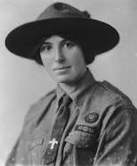

OUR FUNDAMENTALS
DEFINITION:
The Bharat Scouts & Guides is a voluntary, non-political, educational movement for young people, open to all without distinction of origin, race or creed ,in accordance with the purpose, principles and methods conceived by the Founder Lord Baden Powell in 1907.
PURPOSE:
The purpose of the Movement is to contribute to the development of young people in achieving their full physical, intellectual, emotional, social and spiritual potentials as individuals, as responsible citizens and as members of local, national and international communities.
PRINCIPLES:
The Scout /Guide Movement is based on the Following Principles.
DUTY TO GOD:
Adherence to spiritual principle, loyalty to the religion that expresses the acceptance of the duties resulting there from.
DUTY TO OTHERS:
Loyalty to one's country in harmony of local and international peace, understanding, co-operation.
Participation in the development of society with recognition and respect for dignity of one's fellowmen and for the integrity of the natural world.
DUTY TO SELF:
Responsibility for the development of one’s self.
THE METHOD:
The Scout /Guide Method is a system of progressive self-education through:-
- A Promise and Law
- Learning by doing.
- Membership of small groups under adult leadership involving progressive discovery and acceptance of responsibility and training towards self -government directed towards the development of character, and the acquisition of competence, self-reliance, dependability and capacities to co-operate and to lead.
|
Logo of BS&G India

Founder of Scouting
Lord Stephonson Smyth Badden-Powell

Chief Guide
Lady Baden-Powell
|